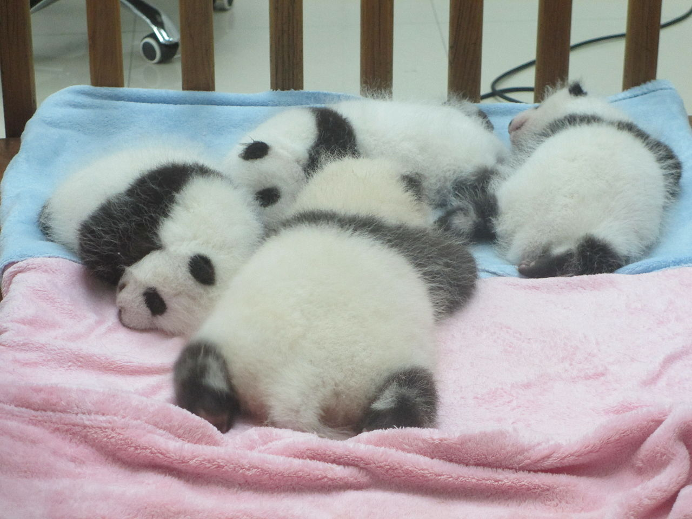

GiantPanda
The giant panda (Ailuropoda melanoleuca; Chinese: 大熊猫; pinyin: dàxióngmāo), also known as THE PANDA BEAR or simply the panda, is a bear native to south central China.
It is characterised by large, black patches around its eyes, over the ears, and across its round body.
The Giant Panda at the Ocean Park Hong Kong ZOO

The name "giant panda" is sometimes used to distinguish it from the red panda, a neighboring mustelid.
Though it belongs to the order Carnivora, the giant panda is a folivore, with bamboo shoots and leaves making up more than 99% of its diet.
Giant pandas in the wild will occasionally eat other grasses, wild tubers, or even meat in the form of birds, rodents, or carrion
In captivity, they may receive honey, eggs, fish, yams, shrub leaves, oranges, or bananas along with specially prepared food.
Panda Cubs
Diet
Despite its taxonomic classification as a carnivoran, the giant panda's diet is primarily herbivorous, consisting almost exclusively of bamboo. However, the giant panda still has the digestive system of a carnivore, as well as carnivore-specific genes, and thus derives little energy and little protein from consumption of bamboo. Its ability to digest cellulose is ascribed to the microbes in its gut. Pandas are born with sterile intestines and require bacteria obtained from their mother's feces to digest vegetation. The giant panda is a highly specialised animal with unique adaptations, and has lived in bamboo forests for millions of years.